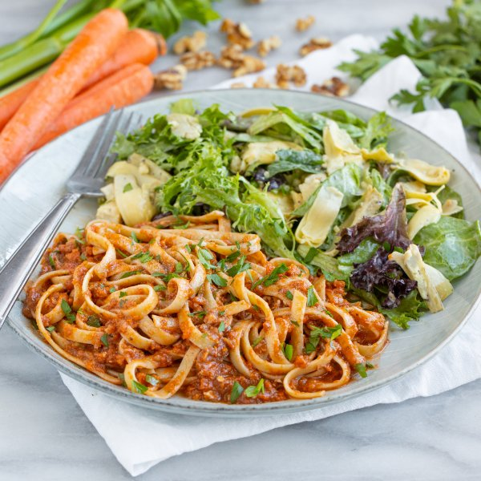

Lentil-Walnut "Bolognese" Fettuccine with Artichoke Mixed Greens

Total Time
35 min
Nutrition (per serving)
619.4 kcalCalories
21.6 gProtein
95.1 gCarbs
19.1 gFat
Full nutrition table
| Calories | 619.4 kcal |
| Total fat | 19.1 g |
| Saturated fat | 2.7 g |
| Trans fat | 0 g |
| Cholesterol | 4.6 mg |
| Sodium | 253.3 mg |
| Carbohydrates | 95.1 g |
| Fiber | 14 g |
| Sugars | 14.2 g |
| Protein | 21.6 g |
| Potassium | 1371.5 mg |
| Calcium | 135.2 mg |
| Iron | 6.4 mg |
| Vitamin A | 1141.8 IU |
| Vitamin C | 50.1 mg |
| Vitamin D | 0.9 IU |
Cookware
Ingredients
- 2 (6 oz) jarsartichoke hearts, marinated
- ½ cupbrown lentils, dried
- 2 mediumcarrots
- 2 stickscelery
- 10 ozfettuccine pasta
- 2 clovesgarlic
- 1 small bunchItalian (flat-leaf) parsley
- 1 (5 oz) pkgspring mix (mixed greens)
- 2tomatoes
- 2 (8 oz) canstomato sauce
- ¼ cupwalnuts
- 1 mediumyellow onion
- basil, dried
- black pepper
- Dijon mustard
- extra virgin olive oil
- mayonnaise
- oregano, dried
- pure maple syrup
- salt
- white wine vinegar
Steps
- Wash and dry the fresh produce.2 medium carrots
2 sticks celery
2 tomatoes
1 small bunch Italian (flat-leaf) parsley
1 (5 oz) pkg spring mix (mixed greens) - Peel, trim, and small dice carrots; trim and small dice celery. Place both in a medium bowl.
- Medium dice tomatoes; add to the bowl with the carrot and celery.
- Peel, halve, and small dice onion; add to the bowl.1 medium yellow onion
- Preheat a large pot over medium heat.
- Once the pot is hot, add oil and swirl to coat the bottom. Add veggies and spices; cook, stirring occasionally, until starting to soften, 4-5 minutes. (Reserve bowl for later use.)2 tbsp extra virgin olive oil
1 tsp salt
1 tsp basil, dried
1 tsp oregano, dried - Add tomato sauce, water, lentils, and walnuts to the pot; stir to combine the bolognese. Bring to a boil over high heat, then reduce heat to medium-low and simmer, stirring occasionally, until lentils are soft, about 18 minutes.2 (8 oz) cans tomato sauce
1 ½ cup water
½ cup brown lentils, dried
¼ cup walnuts - While the bolognese is cooking, fill another large pot about halfway with hot water (from the tap), cover, and bring to a boil. Uncover, add salt and pasta, and stir for a few seconds. Cook until desired firmness, 8-10 minutes. Drain pasta in a colander.1 tsp salt
10 oz fettuccine pasta - Meanwhile, peel and mince garlic; place in the reserved bowl. Add mayo, vinegar, Dijon, maple syrup, and spices; whisk to combine the dressing.2 cloves garlic
2 tbsp mayonnaise
4 tsp white wine vinegar
2 tsp Dijon mustard
2 tsp pure maple syrup
1 tsp basil, dried
½ tsp salt
½ tsp black pepper - Drain and thinly slice artichokes; add to the bowl with the dressing and set aside.2 (6 oz) jars artichoke hearts, marinated
- Shave parsley leaves off the stems; discard stems and mince the leaves.
- When the lentils are soft, use a potato masher to mash the bolognese until semi-smooth, about 1 minute.
- Add drained pasta and half of the parsley to the pot with the bolognese, then toss to combine; remove from heat. (Reserve remaining parsley for garnish.)
- Add mixed greens to the bowl with the dressing and toss to combine the salad.
- To serve, divide pasta and salad between plates; top pasta with remaining parsley and enjoy!